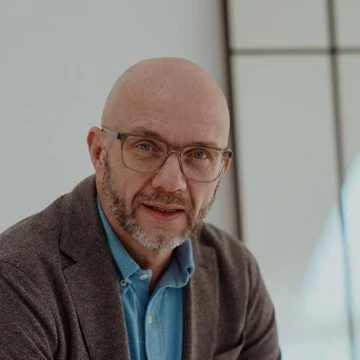
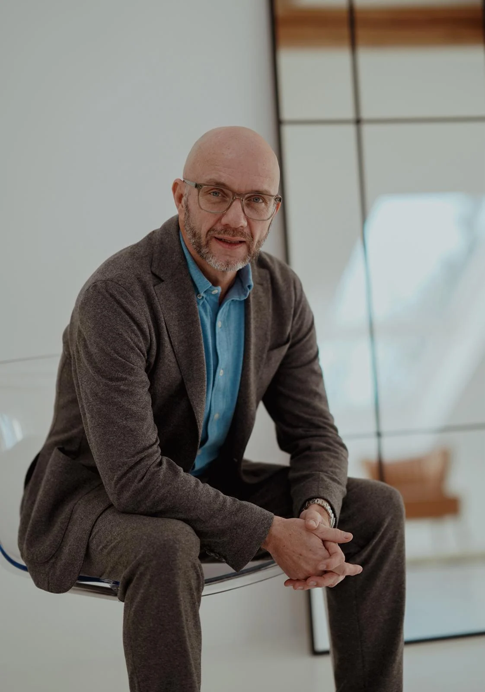
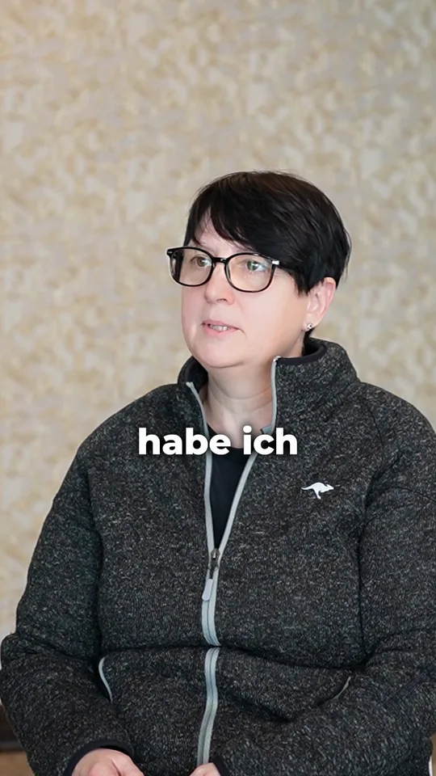

Dein Argument stimmt. Entschieden wird anders.
Du hast die Zahlen geprüft und die Risiken benannt. Am Ende setzt sich der Vorschlag durch, der sicherer vorgetragen wurde.
Du bist bestinformiert im Raum. Gefolgt wird trotzdem jemand anderem. Zwischen Kompetenz und Wirkung liegt eine Lücke.
Michael Ehlers trainiert seit 1990 Menschen, deren Fachwissen stimmt und deren Wirkung im Meeting dahinter zurückbleibt. Im Training arbeitest du an Argumentation und Auftritt. Dazu gehören Videoanalyse und direkte Rückmeldung.
227 von 250 Bewertungen mit 5 Sternen auf ProvenExpert · über 8.000 Teilnehmer
30 Minuten, kostenlos, per Video. Du klärst, welches Format zu dir passt.

„Michael Ehlers zeigt, wie man […] wirklich gehört wird.“Bewertung bei Google, Auslassung mit […] markiert [von Kunde bestätigen: Freigabe Zitat]
Fachwissen allein verschafft dir kein Gehör. Sich Gehör verschaffen heißt: Dein Argument kommt bei den anderen an und geht in die Entscheidung ein. Ob es ankommt, hängt an deiner Haltung und an deinem Aufbau, oft bevor jemand den Inhalt prüft.
Drei Teile davon lassen sich üben:
Ein starkes Statement in 2 Minuten, mit klarer Formel aufgebaut.
Unterbrechungen und unfaire Methoden durchschauen und ruhig kontern.
Präsenz entsteht, wenn Haltung und Worte dasselbe sagen.
Michael Ehlers sagt es in seinem Podcast „Unübersehbar“ so: Kommunikation ist ein Raum, und wer ihn nicht selbst bespielt, überlässt ihn anderen.
Du hast die Zahlen geprüft und die Risiken benannt. Am Ende setzt sich der Vorschlag durch, der sicherer vorgetragen wurde.
Du erklärst im Meeting deine Lösung und bekommst glasige Blicke zurück. Jemand unterbricht: „Können wir das vereinfachen?“ Fünf Minuten später sagt ein Kollege dasselbe mit anderen Worten. Alle nicken. Und plötzlich gehört der Gedanke ihm.
Du willst gründlich sein und bringst jedes Argument. Je mehr du erklärst, desto früher schauen die anderen auf ihr Telefon.
In allen drei Fällen stimmt der Inhalt. Die Wirkung bleibt dahinter zurück.
Gedacht ist das für Führungskräfte, Gründerinnen und Gründer, Beraterinnen und Berater. Und für alle, die im Meeting viel wissen und wenig gehört werden.
30 Minuten, kostenlos, per Video.
Die meisten Rhetoriktrainings starten bei Werkzeugen. Wir starten davor: bei Persönlichkeit, Selbstbild, Mustern und innerer Stabilität. Erst wenn das steht, tragen die Werkzeuge.
Wer du bist, bevor du sprichst.
Wenn Haltung und Worte dasselbe sagen.
Was davon im Raum ankommt.
[von Kunde bestätigen: ein Satz und eine Übung je Methodenschritt]
Viele Rhetoriktrainings starten bei Werkzeugen. Auf vielen Seminaren lernst du Gestik und Mimik und sollst dabei schauspielern. Der Ansatz von Michael Ehlers setzt früher an.
| Viele Rhetoriktrainings | Ansatz von Michael Ehlers | |
|---|---|---|
| Startpunkt | Werkzeuge und Techniken | Persönlichkeit, Selbstbild, Muster und innere Stabilität |
| Gestik und Mimik | einstudiert, oft gespielt | passend zu deinem Naturell, kein Schauspiel |
| Unter Druck | Techniken fühlen sich falsch an und sind weg | Rhetorik wird ein fester Teil deines Auftretens |
Im Seminar sprichst du selbst. Dreimal wirst du auf Video aufgenommen und bekommst sofort Feedback.
Ein Teilnehmer beschreibt den Unterschied.
„Statt starrer Schemata, die nur Kopien erzeugen, gibt er einem die richtigen Werkzeuge an die Hand, um selbst zum Rhetorik-Experten zu werden.“Jan B., Google
Überzeugungskraft besteht aus einzelnen Fähigkeiten. Jede davon lässt sich üben. Die Tabelle zeigt, welche Situation zu welchem Thema gehört und in welchem Seminar es vorkommt.
| Situation | Was du trainierst | Seminar | |
|---|---|---|---|
| 01 | Dein Argument stimmt, die Entscheidung fällt anders | Überzeugungspsychologie: Motive erkennen, Argumente gezielt platzieren | Ruhig bleiben, wenn es eng wird |
| 02 | Du wirst unterbrochen oder angegriffen | Unfaire Methoden durchschauen und ruhig kontern, Schlagfertigkeit | Ruhig bleiben, wenn es eng wird |
| 03 | Die Diskussion läuft ohne Ergebnis | Meetings führen: Diskussionen leiten, Ergebnisse klar sichern | Ruhig bleiben, wenn es eng wird |
| 04 | Deine Idee braucht zu lange | In 2 Minuten ein starkes Statement setzen, mit klarer Formel aufbauen | Frei sprechen |
| 05 | Du sollst eine Gruppe gewinnen | Gruppen überzeugen mit Methoden großer Redner, Zuhören | Mit Sprache führen |
In „Frei sprechen“ und „Ruhig bleiben, wenn es eng wird“ kommt die Körpersprache dazu: Signale des Gegenübers erkennen und die eigene Gestik gezielt einsetzen. Überzeugend argumentieren und souverän auftreten: Beides trainierst du im selben Seminar. Die Seminarnamen sind Arbeitstitel [von Kunde bestätigen: Seminarname]. Alle Inhalte findest du auf der Seite Seminare.
Die Tabelle zeigt die Formate im Vergleich. Welches zu dir passt, klärst du vorher in einem kurzen Gespräch.
| Online-Kurs | Seminar | Gespräch | |
|---|---|---|---|
| Wo | online, von überall | vor Ort: Mallorca, Barcelona, Dubai, Frankfurt, Berlin, Zypern | per Video |
| Wie | Selbstlernkurs mit Video-Lektionen | Intensivtraining in der Gruppe, 10 bis 14 Plätze | 30 Minuten mit Michaels Team |
| Rückmeldung | [von Kunde bestätigen: Extras des Online-Kurses] | dreimal Videoanalyse mit Sofort-Feedback, VR-Training | Einschätzung deiner Situation |
| Zeit | in deinem Tempo, Zugang mindestens 12 Monate | 3 Tage Training und 1 Tag Get Together | 30 Minuten |
| Nächster Schritt | im Gespräch klären | im Gespräch klären | Termin online wählen |
Den Kursnamen und den genauen Umfang nennt dir Michaels Team im Gespräch [von Kunde bestätigen: Kursname]. Preise stehen nicht auf dieser Seite. Du erfährst sie im Gespräch.
30 Minuten, kostenlos, per Video.
Du suchst dir online einen freien Termin aus. Danach bekommst du eine Bestätigung per E-Mail und vor dem Termin eine kurze Erinnerung per WhatsApp.
30 Minuten mit Michaels Team [von Kunde bestätigen: Name und Rolle der Person im Gespräch]. Michaels Team klärt mit dir, wo du stehst und welches Format passt. Bring gern eine konkrete Situation mit, zum Beispiel ein Meeting, in dem du nicht durchgedrungen bist.
Du bekommst die Details zum passenden Format. Ob du buchst, entscheidest du danach.
Kosten: keine.

Michael Ehlers gab sein erstes Rhetorikseminar mit 18 Jahren. Seit 1990 bereitet er Menschen auf Auftritte und Gespräche vor, bei denen jedes Wort geprüft wird.
| Rolle | Beleg |
|---|---|
| Rhetoriktrainer seit 1990 | über 8.000 Teilnehmer |
| Lehrbeauftragter | Universität St. Gallen, Rhetorik und Kommunikation |
| Rhetorik-Analyst | angefragt von ARTE und WELT TV |
| Autor | neun Bücher als Autor oder Herausgeber, darunter „Nie wieder sprachlos!“ |
| Podcast | „Unübersehbar“, seit 2008 alle zwei Wochen eine Folge |
| Auszeichnung | laut ERFOLG Magazin (Ausgabe 2017) unter den Top 100 Trainern im deutschsprachigen Raum |
Namen seiner Mandanten nennt er nicht. Mehr über Michael
Auf ProvenExpert haben 227 von 250 Bewertungen 5 Sterne (Stand: Oktober 2026). Vier Auszüge, die zu dieser Situation passen. Auslassungen sind mit […] markiert.
„Ich habe gelernt, meine innere Haltung zum Ausgangspunkt jeder Präsentation zu machen […] Wie ich spreche, wie ich wirke, wie ich wahrgenommen werde.“
„Die Trainings vor der Kamera mit den darauf folgenden Auswertungen helfen die Selbst- und Fremdwahrnehmung zu schärfen.“
„Trotz 40 Jahren Medienerfahrung konnte ich erstaunlich viel vom Rhetoriktraining profitieren.“
„Ich habe in diesem Kurs mehr gelernt als in all meinen bisherigen Schulungen zusammen.“
 1:00
1:00 1:12
1:12
1:23Drei Teilnehmer erzählen im Video, wie sie das Seminar erlebt haben. Jedes Video dauert etwa eine Minute. Weitere Bewertungen findest du unter Stimmen.
Weitere Antworten findest du in den häufigen Fragen. Wenn du Rhetorik erst kennenlernen willst: Was ist Rhetorik?
30 Minuten, kostenlos, per Video. Michaels Team klärt mit dir, wo du stehst und welches Format passt. Danach entscheidest du in Ruhe.
227 von 250 Bewertungen mit 5 Sternen auf ProvenExpert
Lieber anrufen: +49 15888367664